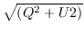
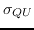
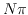
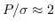
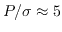
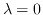

Next: Miscellaneous Analysis Tasks Up: Image Analysis Previous: Modifying Images by Models
In this section we see how to make total polarised intensity and position angle images (task impol), fractional polarisation images, and rotation measure images (task imrm).
It is generally necessary to deconvolve the Q and U images in the same way that you do the Stokes I image before combining them. Note however, that negative values in these images are as valid as positive values; it just depends upon the position angle of the polarised emission. impol can optionally (and by default) debias the total polarised intensity image with a first order algorithm (see help file). A polarised intensity image is positive definite ( ), even with no signal and the intensities of its pixels follow the Ricean distribution. At high signal-to-noise ratios, this is the normal distribution. At low signal-to-noise ratios, it is skewed biased distribution.
The ability of impol to produce error images is very important to assist you in assessing what is real and what is not. These are computed via a simple propagation of errors, and you must specify the rms level of the input image ( is also needed for debiasing the polarised intensity). Tasks histo (see above) or cgcurs (see Chapter 17) can give you estimates of the relevant statistical information of an image.
impol offers the opportunity to blank the output images based upon the signal-to-noise ratio of the polarised intensity image (keyword sncut), and also on the absolute value of the position angle error images (keyword pacut).
Interpreting polarised intensity images below about 2-sigma is pretty deadly because the debiasing becomes inaccurate. In general, it is recommended that you blank the output images in the ways provided. You have the choice of whether you blank the polarised intensity images (not the position-angle image) with zeros or via a bit in a mask. It is important that you use zero if you are planning to evaluate statistics over a region that encompasses the blanked pixels. This is because zero is generally a better estimate of the polarised intensity of a blanked pixel (which has a small signal) than just not contributing to the sums with that pixel.
A case where debiasing and blanking is not appropriate is a detection polarisation experiment. You should ignore impol when it implores you to blank and debias in this case.
impol can also make a plot showing the effect of bias in the polarised intensity; see the help file for details. You can access this plot even if you do not input any images. The plot is made via a Monte Carlo simulation. It may take a while to run so be patient; just fill in the device to activate this option. For extra discussion of debiasing and blanking see the VLA scientific memorandum no 161. by Patrick Leahy.
The following example takes CLEANed Q, U and I images and their rms noise value (assumed the same for Q and U), and computes images of the linearly polarised position angle, the debiased total polarised intensity, the fractional polarisation and their associated errors. These images are all blanked when the error in the position angle image is greater than 10 degrees or when the signal-to-noise ratio in the polarised intensity image is less than three. Note that the error image for the polarised intensity is constant (and equal the rms of the Q and U images that you input) so that there is no output polarised intensity error blanking option. The choice of the blanking levels depends upon your particular data; do not treat the ones given below as being necessarily appropriate.
| IMPOL | |
| in=qcln,ucln,icln | Input Q, U and I images respectively |
| poli=p,ep | Polarised intensity and error images |
| polm=m,em | Fractional polarisation and error images |
| pa=pa,epa | Position-angle and error images |
| sigma=0.003,0.004 | Set standard deviation of noise in Q or U and Iin Jy/beam |
| sncut=3 | Blank below 3-sigma |
| pacut=10 | Blank when p.a. error greater than 10 degrees |
| options=zero | If evaluating area statistics |
| rm | Leave unset |
| device | No bias plot |
By default, imrm
tries to remove  ambiguities with the
assumption that there are none between the angles of the first two
given images (note this has changed from an earlier algorithm). The
details of the algorithm are given in the help file. Basically, it
estimates the rotation measure from these two images, and then estimates
the position angle expected at the other frequencies. It then adds or
subtracts integral multiples of  radians to make the measured values
as close to the predicted values as possible. Then a least squares fit
is done to solve for the rotation measure.
radians to make the measured values
as close to the predicted values as possible. Then a least squares fit
is done to solve for the rotation measure.
You can set options=ambiguous to turn this ambiguity removing off, but you should read the help file carefully, and examine the results carefully (you should do this anyway) if you do this. In principle, if there are no ambiguities, the ambiguity removing algorithm should not find any.
The units of the rotation measure, RM, and position-angle images are rad/m/m and degrees, respectively.
The keyword rmi is very useful. It enables you to specify an initial estimate of the rotation measure. For example, you may know the Galactic contribution in the direction of your source. Angle appropriate to this amount is subtracted from the data before any attempt to compute the rotation measure is made. If it is substantial, it will help quite substantially to reduce ambiguity problems.
imrm offers three blanking options for the output images (all of the blanking criteria are applied equally to the rotation measure and position angle images). First, you can blank the output images if any of the input error images exceeds a certain value. Second, you can blank the images if the output errors exceed a certain value, and third you can blank the images if the goodness of fit is less than a certain value. You should think about what these values should be. Remember that you are now generating a tertiary image, and that the errors compound rapidly. Unfortunately, it makes no sense to blank rotation measure and position-angle images based upon a measure of the output signal-to-noise ratio; a rotation measure or position angle of zero does not necessarily imply little signal. Probably blanking with the input position-angle errors (keyword errcut) is the best way to blank the output.
You can only compute the goodness of fit if you have position angle images at more than two frequencies, and if you input their error images. If it cannot be computed, the goodness of fit is assumed to be unity so that if you have more than 2 frequencies, but do not input the error images, the output errors are computed with this assumption (that is, you cannot get independent estimates of the the output errors and the goodness of fit).
If the goodness of fit is above about 0.1, then the fit is believable. If it is as low as 0.001, the fit may be believable if you have non-normally distributed errors in the position angle images. If it is below 0.001, the fit should probably be rejected; this is the default value for the keyword qcut. Note that the distribution of the noise in the position angle images is indeed non-normal at low signal-to-noise ratios. Below  they are seriously non-normal (but pixels such as these should already have been blanked in impol). Above , the noise is approximated by a normal distribution. The grey area is between 2- and 5-sigma.
If you set the keyword device, then imrm will draw some plots showing the fits to the data. The plots show the data that the least squares fit was done on (i.e. with turns removed as needed), but with the initial estimate rmi added back in. Set options=accumulate to put all the plots on one panel, else use nxy to specify the number of sub-plots per page, with each sub-plot containing the data fit for one spatial pixel.
| IMRM | |
| in=pa.f1,pa.f2,pa.f3,pa.f4 | Input p.a. images at different frequencies |
| inerr=epa.f1,epa.f2,epa.f3,epa.f4 | Error images associated with the p.a. images |
| rmi=35 | A priori estimate of RM |
| rm=rm | Output RM image |
| pa0=pa0 | Output  position-angle image |
| qcut=# | Blank if goodness of fit below this value |
| errcut=# | Blank if any input errors greater than this |
| rmcut=# | Blank if RM error greater than this |
| pacut=# | Blank if position angle error greater than this |
| device=/xs | Draw plots please |
| nxy=10,10 | 100 subplots per page |
Miriad manager